From Singil Station to the blue gate신길역에서 파란 대문까지从新吉站到蓝色大门
Line 1, Exit ① · about 500 m, 5 minutes on foot.1호선 1번 출구 · 약 500m, 걸어서 5분1号线 1号出口 · 约500米，步行5分钟
-
🗺️
Full route전체 지도全程路线
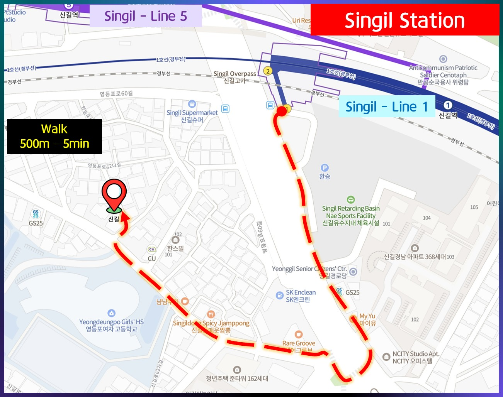
-
1
Come out of Exit ①1번 출구로 나오세요从1号出口出来
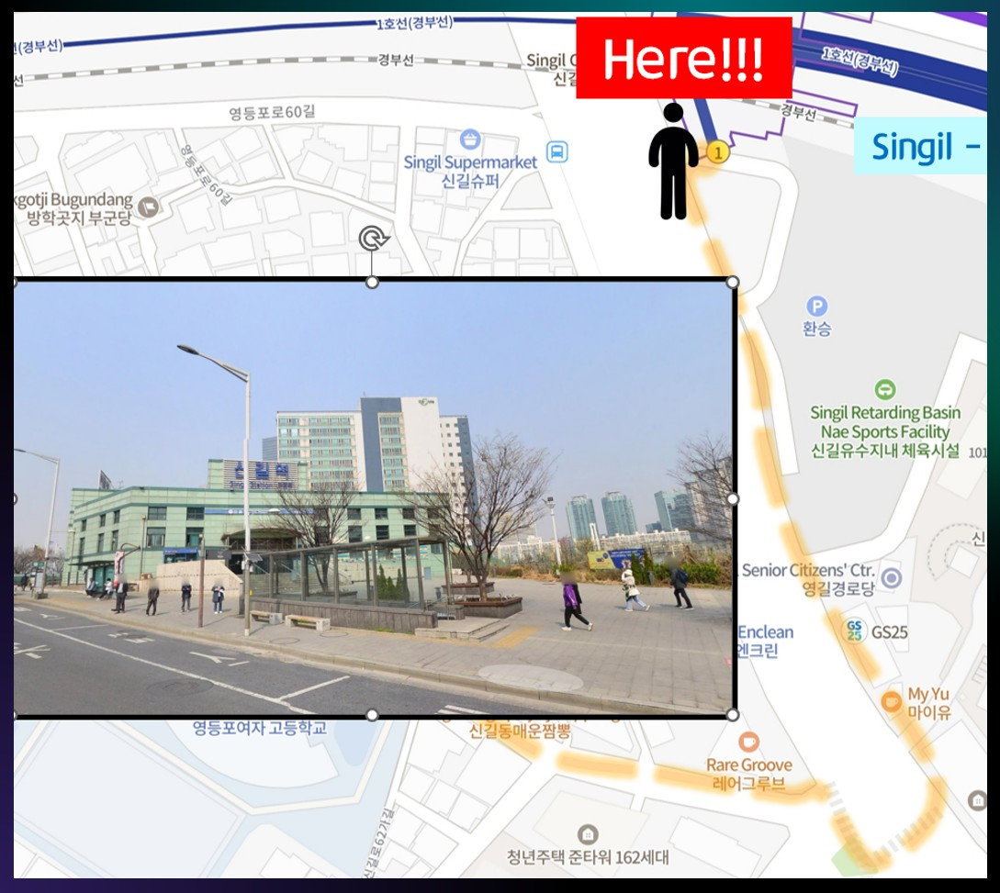
-
2
Go straight until you reach the crosswalk횡단보도가 나올 때까지 직진하세요一直往前走，直到看到人行横道
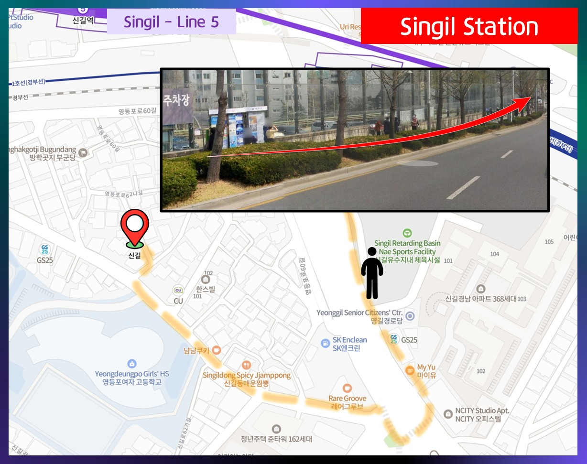
-
3
Cross at the crosswalk횡단보도를 건너세요过人行横道
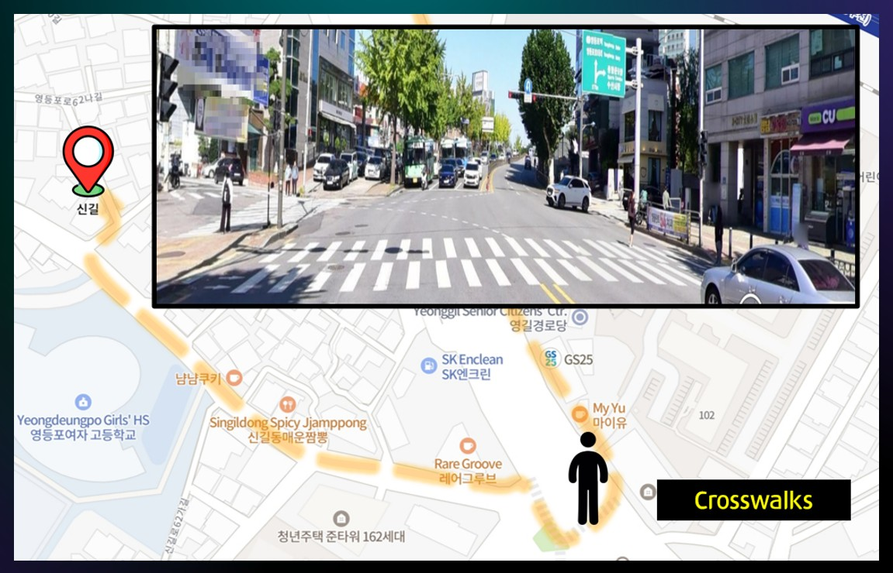
-
4
Walk straight toward Yeongdeungpo Girls’ High School영등포여자고등학교 건물을 바라보며 직진朝着永登浦女子高中的方向直走
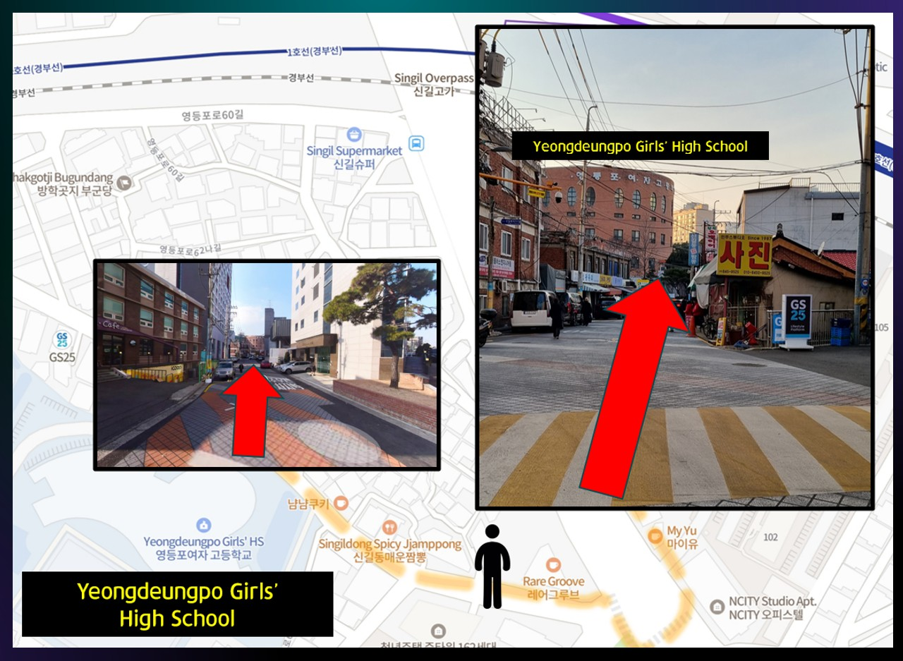
-
5
Pass the CU convenience storeCU 편의점을 지나서经过CU便利店
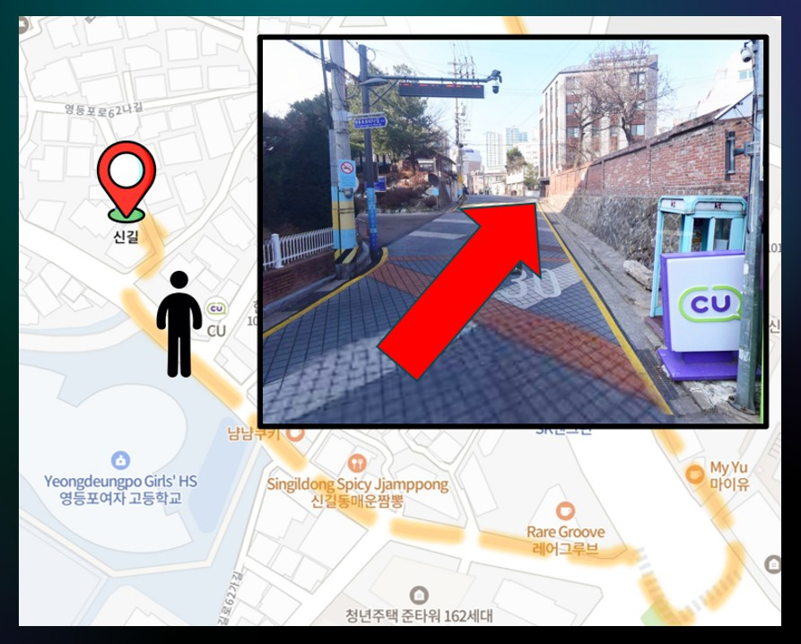
-
6
After the brick wall, take the stairs just up the alley on the right담벼락을 지나 오른쪽 골목 바로 위 계단过了围墙，走右边小巷口上方的楼梯
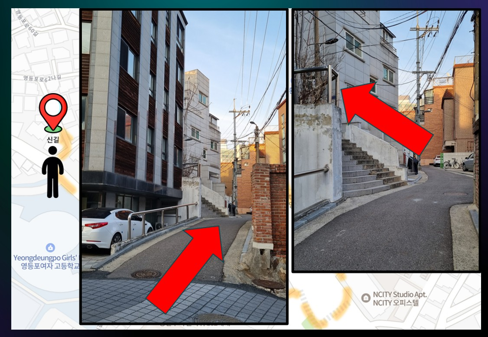
-
7
The blue gate, No. 24. You’re here24번지 파란 대문, 도착!24号蓝色大门，到了！
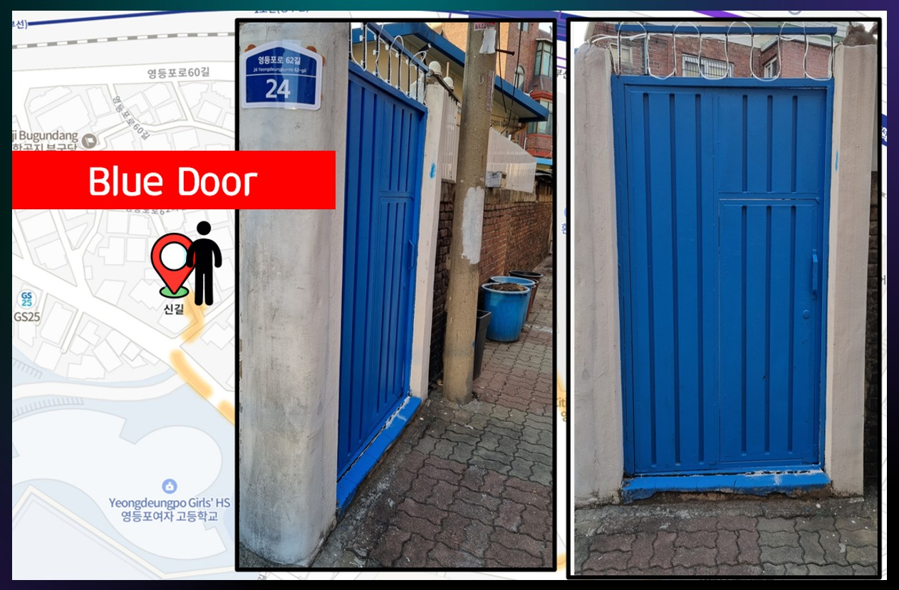


Push the blue gate to open it.파란 대문은 밀어서 열어주세요.蓝色大门往里推就能打开。
Getting around from here여기서 가는 길从这里出发去各地
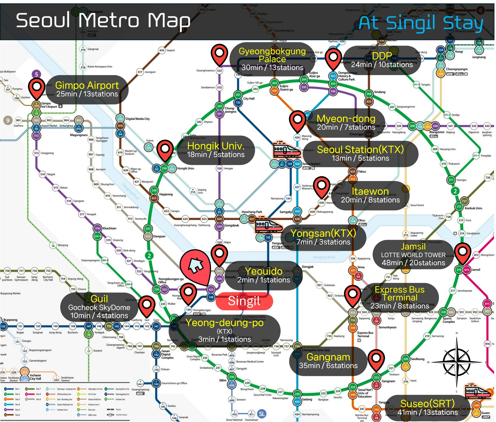
Tap any image to open it full size and zoom in.사진을 누르면 원본 크기로 열려서 확대해 볼 수 있어요.点击图片可打开原图并放大查看。
Shortcut, 180 m · 2 min지름길 180m · 2분近路 180米 · 2分钟 Route from the gate to the station. No suitcase only (stairs). Coming in, walk it in reverse.숙소에서 역으로 가는 길이에요. 계단이 있어 캐리어 없을 때만! 올 때는 반대로 오세요.这是从住处去车站的路。有楼梯，只适合没带行李箱时走。来的时候反着走即可。
-
🗺️
Shortcut route지름길 지도近路地图
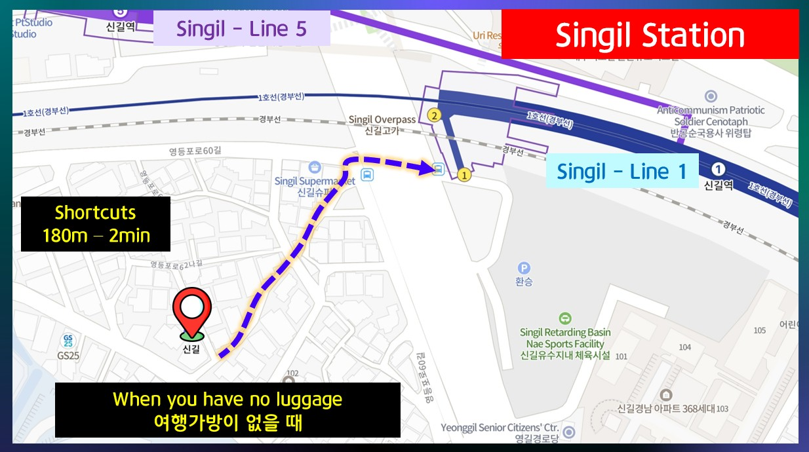
-
1
Leave the gate and go down the stairs, then right대문을 나와 계단을 내려간 뒤 오른쪽 골목으로出大门走下楼梯，然后往右走
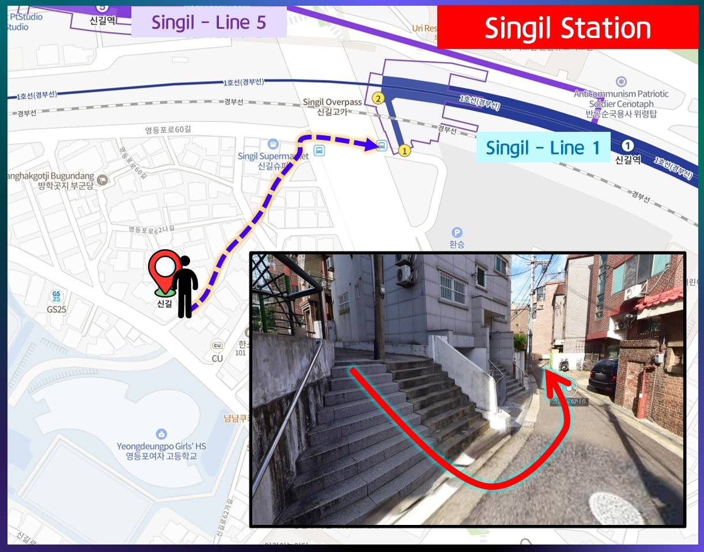
-
2
Follow the alley past the pink wall분홍색 벽이 보일 때까지 골목을 따라 직진沿着小巷走，经过粉色的墙
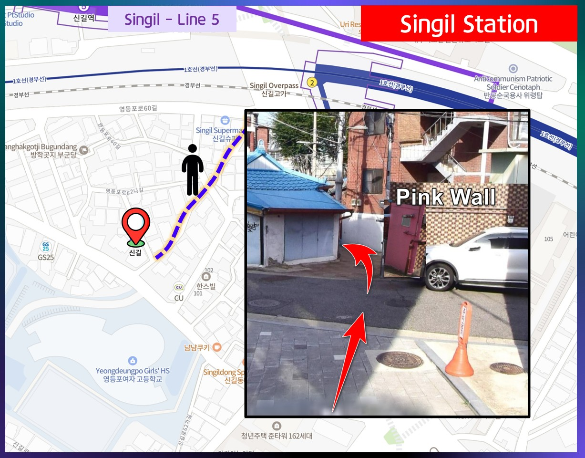
-
3
Under the overpass is the subway entrance고가 아래 지하차도로 들어가면 신길역이에요高架桥下面就是地铁入口
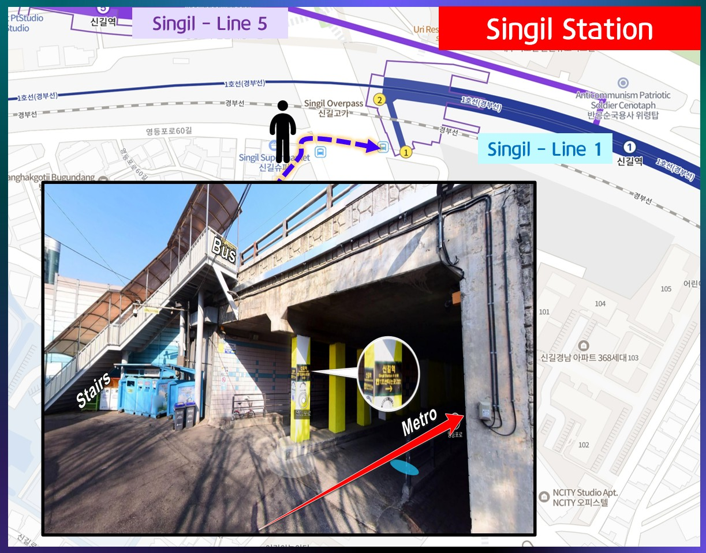


From Incheon Airport인천공항에서 오는 길从仁川机场过来
Airport Railroad, then Line 5. One transfer at Gimpo Airport.공항철도 → 5호선, 김포공항역에서 한 번 환승机场铁路 → 5号线，在金浦机场站换乘一次
-
🗺️
Train route전철 경로乘车路线
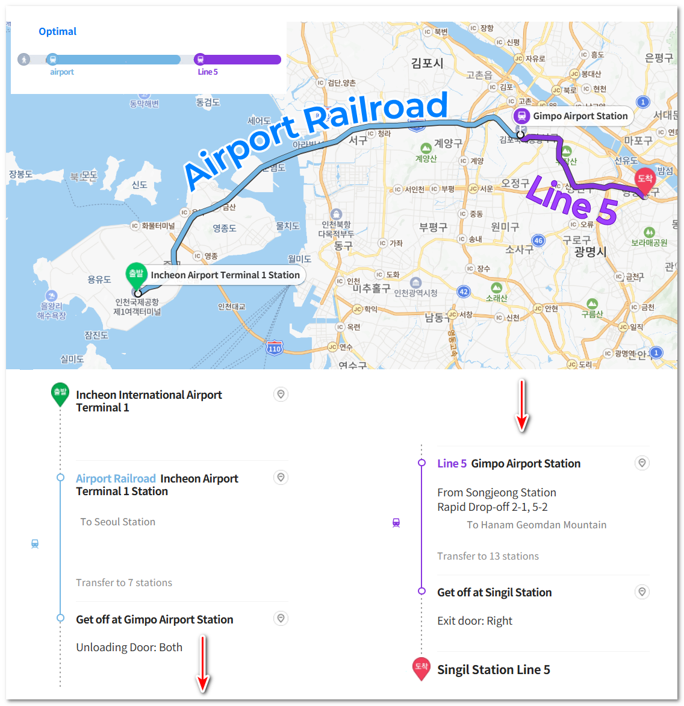
-
1
Take the Airport Railroad toward Seoul Station공항철도 서울역 방면 탑승乘坐开往首尔站的机场铁路
-
2
Get off at Gimpo Airport김포공항역에서 하차在金浦机场站下车
7 stops from Terminal 1.1터미널에서 7개 역이에요.从第1航站楼坐7站。
-
3
Transfer to Line 5 toward Hanam Geomdansan5호선 하남검단산 방면으로 환승换乘5号线，往河南黔丹山方向
Ride 13 stops. Board at door 2-1 or 5-2 for the quickest exit.13개 역을 가요. 빠른 하차는 2-1, 5-2번 문이에요.坐13站。在2-1或5-2号车门上车，下车最方便。
-
4
Get off at Singil신길역에서 하차在新吉站下车
Doors open on the right. Follow the signs to Exit ①, then use the walking directions.내리는 문은 오른쪽이에요. 1번 출구 표지판을 따라 나온 뒤 도보 안내를 보세요.右侧开门。跟着指示牌走到1号出口，然后看步行路线。

Heating and hot water난방·온수 사용법暖气和热水的使用方法
-
🎛️
Reading the boiler panel보일러 화면 보는 법锅炉面板说明
When 난방 (heating) is lit, the heating is on. 온수 is hot water. Left number: current temperature. Right number: the temperature you set.화면에 난방이 켜져 있으면 난방 중이에요. 온수는 온수 표시예요. 왼쪽 숫자는 현재 온도, 오른쪽은 희망 온도예요.显示屏上 난방（暖气）亮着表示暖气已开启，온수表示热水。左边数字是当前温度，右边是设定温度。
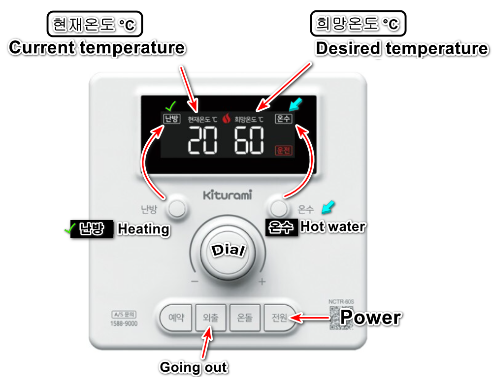

💧 Hot water must stay set at 60°C 🌡💧 온수는 60°C로 설정되어 있어야 해요 🌡💧 热水必须设置在60°C 🌡
-
🌡️
Set the room temperature실내 온도 설정设置室内温度
Press the 난방 (heating) button, then turn the dial to the temperature you want.난방 버튼을 누르고 다이얼을 돌려 원하는 실내 온도로 맞추세요.按下 난방（暖气）按钮，再转动旋钮调到想要的室内温度。
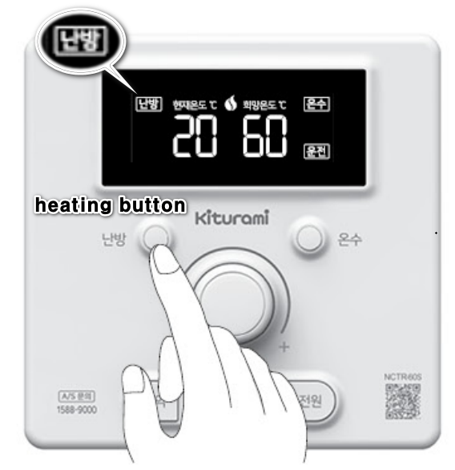
-
❓
Room not warming up?난방을 켰는데 방이 따뜻해지지 않나요?开了暖气房间还是不暖？
Check the display. If it shows 온돌 (underfloor) and 75°C, press the 난방 button once more.화면을 확인하세요. 온돌 75°C로 되어 있으면 난방 버튼을 한 번 더 눌러주세요.请看显示屏。如果显示 온돌（地暖）和75°C，请再按一次 난방 按钮。
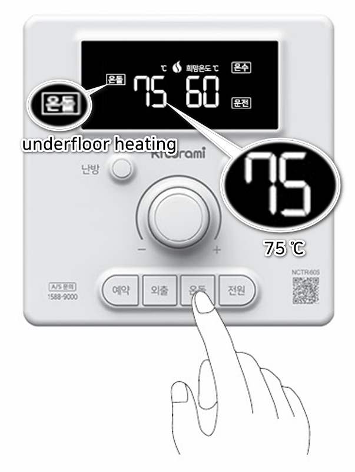


Using the air conditioner에어컨 사용법空调使用方法
❄️ It must be set to cooling mode (냉방).❄️ 반드시 냉방 모드로 설정해주세요.❄️ 必须设置为制冷模式（냉방）。
-
❄️
Switch to cooling, then lower the temperature냉방 모드로 바꾸고 온도를 낮추세요切换到制冷，再调低温度
Press 모드 (Mode) until 냉방 appears, lower the temperature and wait a moment. Cool air will start to come out.모드 버튼을 눌러 냉방이 표시되게 한 뒤 온도를 낮추고 잠시 기다리면 시원한 바람이 나와요.按 모드（模式）键直到显示 냉방，调低温度后稍等片刻，就会吹出冷风。
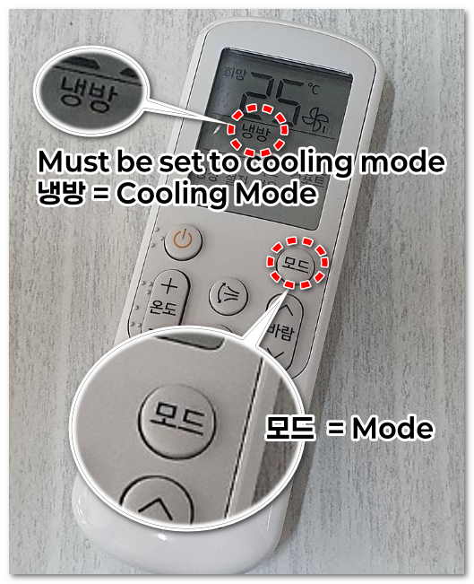

Delivery address배달 주소外卖地址
Always include your room number and “뒷골목” (back alley).방 번호(호수)와 ‘뒷골목’을 꼭 입력해주세요.请务必填写房间号和“뒷골목”（后巷）。
Enter your room number first.방 번호를 먼저 입력해주세요.请先输入房间号。
Couldn’t copy. Press and hold the address to copy it.복사하지 못했어요. 주소를 길게 눌러 복사해주세요.复制失败，请长按地址手动复制。
Full address전체 주소完整地址
서울특별시 영등포구 영등포로62길 24, 뒷골목 파란 대문 ○○○호
Detail address (상세주소)상세주소详细地址（상세주소）
뒷골목 파란 대문 ○○○호
In a delivery app, paste the detail address into the 상세주소 field.배달앱에서는 상세주소 칸에 붙여넣으세요.在外卖 App 里，把详细地址粘贴到 상세주소 一栏。
Public parking nearby공영주차장 안내附近的公共停车场
Yeongdeungpo Girls’ High School public parking lot.영등포여고 공영주차장永登浦女子高中公共停车场。
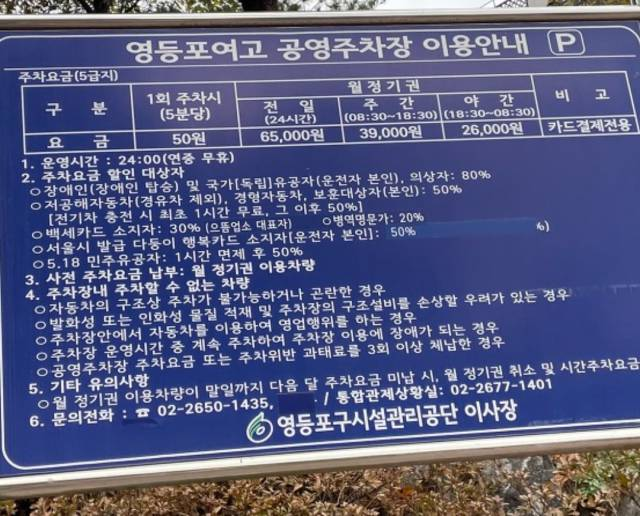
Fees주차 요금收费标准
- 50 won per 5 minutes (600 won per hour)5분당 50원 (1시간 600원)每5分钟50韩元（每小时600韩元）
- Open 24 hours, every day · card payment only24시간, 연중무휴 · 카드 결제 전용24小时，全年无休 · 仅限刷卡
| Parking time주차 시간停车时长 | Estimated fee예상 요금预计费用 |
|---|---|
| 6 hours6시간6小时 | ₩3,600 |
| 12 hours12시간12小时 | ₩7,200 |
| 24 hours (1 day)24시간 (1일)24小时（1天） | ₩14,400 |